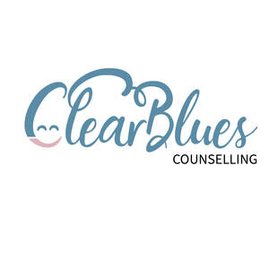

Trade Mark Journal No.2025/024 13 June 2025
UK00004210831 29 May 2025 (41,44,45)

- Class 41
- Coaching; Career counselling and coaching; Coaching services; Personal coaching [training]; Life coaching (training); Arranging professional workshop and training courses; Instructional and training services; Conducting training seminars for clients; Personal development training; Training for parents in parenting skills; Consultancy relating to vocational skills training; Training and instruction; Career and vocational counselling; Courses (Training -) relating to management; Health and wellness training; Personal development courses; Provision of training courses in personal development.
- Class 44
- Psychological counselling; Medical counselling; Nutrition counselling; Health counselling; Medical counselling services; Counselling relating to occupational therapy; Psychological counseling; Counselling relating to diet; Counselling relating to nutrition; Medication counseling; Medical counseling; Psychological counseling of staff; Medical counseling services; Nutrition counseling; Health counseling; Counseling relating to occupational therapy; Psychotherapy services; Counselling relating to the psychological treatment of medical ailments; Counselling relating to the psychological relief of medical ailments; Psychotherapy; Lifestyle counseling and consultancy for medical purposes; Medical counseling relating to stress; Holistic psychotherapy; Psychological counseling services in the field of sports; Psychological consultation; Individual medical counseling services provided to patients; Psychological assessment services; Therapy services; Addiction treatment services; Autogenic therapy services; Insomnia therapy services; Meditation services; Withdrawal treatment services for addicts; Providing psychological treatment; Psychological treatment; Occupational psychology services; Rehabilitation of substance abuse patients; Rehabilitation for substance abuse patients; Medical services in the field of treatment of chronic pain; Rehabilitation services for substance abuse patients; Psychological care; Rehabilitation of alcohol addicted patients; Medical advice for individuals with disabilities; Medical advice for persons with disabilities; Smoking (Anti -) therapy; Bodywork therapy; Therapeutic treatment of the body; Withdrawal treatments for addicts; Health care relating to relaxation therapy; Mental health services; Rehabilitation of narcotic addicted patients; Providing mental health rehabilitation facilities; Providing mental rehabilitation facilities; Health care; Public health counseling; Health care in the nature of health maintenance organizations; Psychologist (Services of a -); Services of a psychologist; Weight reduction diet planning and supervision; Individual and group psychology services; Human healthcare services; Rehabilitation of drug addicted patients; Narcotic rehabilitation; Rehabilitation (Narcotic -); Pathology services relating to the treatment of persons; Consultancy services relating to personal behaviour; Provision of information relating to behavioural modification.
- Class 45
- Bereavement counselling; Pastoral counselling; Marriage guidance counselling; Bereavement counseling; Marriage counseling; Counselling relating to spiritual direction; Divorce mediation services; Bereavement support; Providing personal support services for families of patients with life threatening disorders; Consulting in the field of personal relationships; Providing emotional support to cancer patients and their families via interactive online forums; Provision of emotional support to families; Providing personal support services for cancer patients and their families; Providing information on issues concerning human rights.
Kathy Stewart